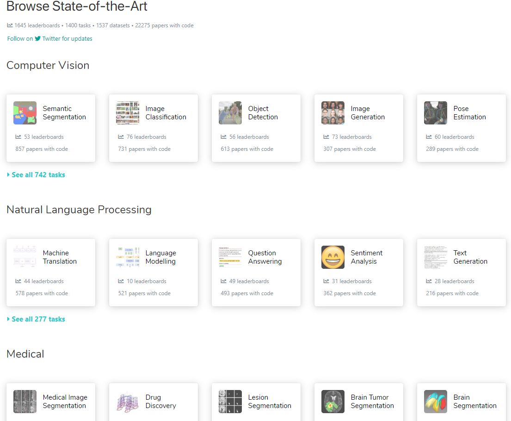
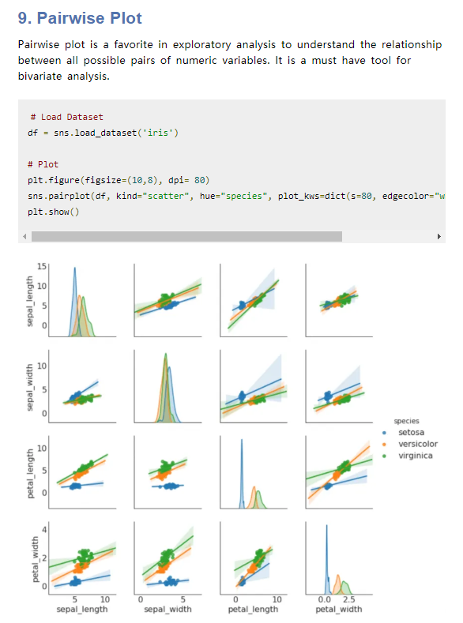

宝藏资源整理
陈若愚整理
email: 2389388826@qq.com
1.先进的论文网站
地址：https://paperswithcode.com/sota
该网站有较为先进的论文与代码的汇总，分很多类，例如图深度学习、图像分割、生物医学图像等等。

2.画图资源汇总
2.1 Top 50 matplotlib visualization
地址：https://www.machinelearningplus.com/plots/top-50-matplotlib-visualizations-the-master-plots-python/
50个最佳案例，讲述matplotlib画图

2.2 On The World Map
世界各地的地图

2.3 自动绘制深度学习模型
地址：https://www.zhihu.com/answer/630155832
该作者汇总了全部可以画深度学习模型图的网站


3.大牛博客类
3.1 红色石头
良心作者，整理了多个关于机器学习与深度学习的文章

3.2 Loss Functions for Computer Vision Models
地址：https://playment.webflow.io/blog/loss-functions-computer-vision-models
讲述了各种图像处理，包括分类，目标检测等的损失函数介绍

4.Github
5.工具
5.1 Color Themes
地址：http://color-themes.com/?view=index&page=1&order=popular&search=&layout=Generic
代码风格下载，可以用与pycharm等IDLE

5.2 系统迷
地址：https://www.xitmi.com/?tdsourcetag=s_pctim_aiomsg
各种破解软件网站

5.3 偶书
电子书下载网站

5.4 电子书分享网站
各种分享电子书

6.学术
6.1 Library Genesis
免费下载各种学术的书籍

6.2 SCI-hub
地址：
http://tool.yovisun.com/scihub/
用于下载文献的网站，可以与谷歌学术相结合，一个检索，一个免费下载，但是SCI-hub容易被封杀，因此网站可能会有迁移变化

6.3 ResearchGate
地址：https://www.researchgate.net/
学术资源网站，缺点是注册需要edu邮箱

6.4 INNOJOY 专利搜索引擎
地址：http://www.innojoy.com/search/index.html
免费的转移搜索引擎

7.官方手册
7.1 Tensorflow/Keras
地址：https://tensorflow.google.cn/
tensorflow的官方手册

7.2 Pytorch
pytorch的官方手册

7.3 Dlib
人脸识别库

8 数据集
8.1 ImageNet
主要是大规模图像分类

8.2 Kaggle
各类数据集
地址： https://www.kaggle.com/datasets

8.3 Analytics Vidhya
各类数据集
地址：https://datahack.analyticsvidhya.com/contest/all/

8.4 UCI Machine Learning Repository
机器学习数据集
地址：https://archive.ics.uci.edu/ml/index.php
88cec5132bf4d8dcf69284acff72646a.png
Github整理
地址：https://github.com/awesomedata/awesome-public-datasets